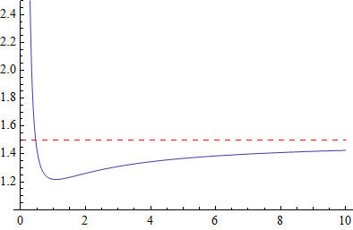

Asymptotic bound for a particular sum
In a
post on his blog, Qiaochu Yuan asks how fast the sequence
\[
R_n = \frac{n + \sqrt{n} + \sqrt[3]{n} + \cdots + \sqrt[n]{n}}{n}.
\]
converges to its limit. If you want to calculate this limit then
you should stop reading here. Anyhow, the limit is two, so if the
asymptotic behavior of
\[
S_n = R_n - 2 + \frac{1}{n} = \frac{1}{n} \sum_{k = 2}^{n}
\left(n^{1/k} - 1\right)
\]
is any slower than $O(1/n)$, then that behavior must belong to the
quantity $R_n - 2$.
In Qiaochu's post he gives evidence for why he believes the
asymptotic behavior to be $O(1/\sqrt{n})$. We'll show that this
is indeed the case. To do this we'll need a small lemma.
Lemma.
The function
\[
\phi(x) = x^2 \left(e^{1/x} - 1\right) - \frac{x^2}{x+1}
\]
has the following properties:
- (a)
$\lim_{x \to 0^+} \phi(x) = \infty$,
- (b)
$\lim_{x \to \infty} \phi(x) = 3/2$,
- (c)
There exists an $x_0 \in (0,\infty)$ such that $\phi$
is decreasing on $(0,x_0)$ and increasing on $(x_0,\infty)$
and $\phi(x_0) < 3/2$.

A plot of $\phi(x)$ (in blue) and its horizontal asymptote $3/2$
(dashed and red).
Proof. (a) This follows from the
application of
L'Hopital's Rule.
(b) We have
\[
\begin{align*}
\phi(1/x) &= \frac{e^x - 1}{x^2} - \frac{1}{x(x+1)} \\
&= \frac{x + \frac{x^2}{2} + O\left(x^3\right)}{x^2} -
\frac{1}{x}\left(1 - x + O\left(x^2\right)\right) \\
&= \frac{3}{2} + O(x) \end{align*}
\]
as $x \to 0$, so
\[
\phi(x) = \frac{3}{2} + O\left(\frac{1}{x}\right)
\]
as $x \to \infty$.
(c) We will show that
\[
\phi'(x) = \frac{1}{(x+1)^2}\left(e^{1/x} (x + 1)^2 (2x - 1) - x
\left(2x^2 + 5x + 4\right)\right)
\]
has exactly one positive real zero. Hence we consider the function
\[
f(x) = (x+1)^2 \phi'(x) = e^{1/x} (x + 1)^2 (2x - 1) - x \left(2x^2 +
5x + 4\right).
\]
First, $f(1) < 0 < f(2)$, so $f(x)$ has a zero in the
interval $(1,2)$ with the desired sign change. The result will follow
if
\[
\tag{1}
f'(x) = (x + 1) \left(e^{1/x} \left(6x - 2 - \frac{1}{x} +
\frac{1}{x^2}\right) - 6x - 4\right) > 0
\]
when $x > 0$. Well, if we define
\[
g(x) = \frac{x^2 f'(1/x)}{x+1} = e^x \left(x^3 - x^2 - 2x + 6\right) -
4x - 6
\]
then $g(0) = 0$, so $(1)$ will follow if
\[
\tag{2}
g'(x) = e^x \left(x^3 + 2x^2 - 4x + 4\right)-4 > 0
\]
when $x > 0$. Since $g'(0) = 0$, we repeat the process once more
to calculate
\[
g''(x) = e^x x^2 (x + 5).
\]
Thus $g''(x) > 0$ when $x > 0$, giving inequality
$(2)$ which in turn implies inequality $(1)$.
In light of this conclusion, the facts $\phi(1) < 3/2$
and $\phi'(1) < 0$ imply that $\phi(x_0) < 3/2$.
The lemma tells us all we will need to know about $\phi$. In
particular, we can conclude that, if $\phi(r) < 3/2$ for some
$r$, then $\phi(x) < 3/2$ for all $x \geq r$. Therefore, we can
take $r$ small enough so that $\phi(x) \leq \phi(r)$ for $x \geq r$. We
can now derive the desired bound.
Proposition.
\[
S_n = \frac{1}{n} \sum_{k = 2}^{n} \left(n^{1/k} - 1\right) = O
\left(\frac{1}{\sqrt{n}}\right).
\]
Proof. By the lemma, $\phi(x) \leq \phi(2/\log n)$
for $x \geq 2/\log n$ when $n$ is large enough. Applying the map $x
\mapsto x/\log n$ renders the inequality
\[
n^{1/x} - 1 \leq \log n \left(\frac{\phi(2/\log n) \log n}{x^2} +
\frac{1}{x + \log n}\right)
\]
for $x \geq 2$.
The summand $n^{1/k} - 1$ is a decreasing function of $k$, so we
canwrite
\[
\begin{align*}
S_n &\leq \frac{1}{n} \left(\sqrt{n} - 1 + \int_2^n
\left(n^{1/x} - 1\right) dx \right) \\
&\leq \frac{1}{n} \left(\sqrt{n} - 1 + \int_2^n \log n
\left(\frac{\phi(2/\log n) \log n}{x^2} + \frac{1}{x + \log n}\right)
dx \right) \\
&= \frac{1}{n} \left(\sqrt{n} - 1 + \frac{\phi(2/\log
n)(n-2)(\log n)^2}{2n} + \log n \log\left(\frac{n + \log n}{2 + \log
n}\right) \right).
\end{align*}
\]
(Justification for the first inequality can be found here.)
Plugging
in the value of $\phi(2/\log n)$ we get
\[
\begin{split}
S_n &\leq \frac{8 - 8\sqrt{n} - 6n + 6n^{3/2} + 8\log n -
4\sqrt{n}\log n - 5n\log n + 3n^{3/2}\log n}{n^2 (2 + \log n)} \\
&\hspace{3in} + \frac{\log n \log\left(\frac{n + \log
n}{2 + \log n}\right)}{n}.
\end{split}
\]
The first term is $O \left(\frac{1}{\sqrt{n}}\right)$, and, since
\[
\frac{\log n \log\left(\frac{n + \log n}{2 + \log
n}\right)}{\sqrt{n}} \to 0,
\]
so is the second.
Some comments on approximating $e^{1/x}-1$
The lemma tells us that, for $x$ large enough (e.g. for $x \geq
103/223$),
\[
\phi(x) < 3/2,
\]
and so
\[
\tag{3}
e^{1/x} - 1 < \frac{1}{x+1} + \frac{3}{2x^2}.
\]
Hence the coefficient on $1/x^2$ is significant geometrically; it
is the upper bound for $\phi$ on the interval in question.
Interestingly, it also plays an important analytical role. To see
this, let's take a step back and try "guessing" the above
relationship.
We want to approximate the function
\[
e^{1/x} - 1 = \frac{1}{x} + \frac{1}{2x^2} + \frac{1}{6x^3} + \cdots
\]
for $x$ large enough. And not only this; our purposes require that
the function we approximate it by have a known integral. Further,
we would like it to have the same behavior near infinity, so we
want it to be equal up to at least inverse-first order. If we
apply the map $x \mapsto 1/x$, our question becomes that of
approximating
\[
e^x - 1 = x + \frac{x^2}{2} + \frac{x^3}{6} + \cdots
\]
near the origin by some function equal to at least first order and
with a known integral (after transforming back).
Because every coefficient in the power series of the exponential
function is positive, we will always have
\[
\sum_{k=1}^{r} \frac{x^k}{k!} < e^x - 1,
\]
so we'll need to look elsewhere if we want to bound our function
above. The function
\[
\frac{1}{1-x} = 1 + x + x^2 + x^3 + \cdots
\]
seems like a good candidate: we can simply multiply by $x$ to get
equality to first order and it certainly has a known integral after
the appropriate transformation. However, things blow up when $x$ is
near unity, and has the wrong sign when $x$ is larger. These clash
with properties of the exponential function we'd like to preserve.
Let's try
\[
\frac{1}{x+1} = 1 - x + x^2 - x^3 + \cdots.
\]
Multiplying this by $x$ we do indeed get equality up to first order
near zero, and its behavior elsewhere doesn't conflict nearly as badly
as the previous guess. Transforming back for a moment, we have
\[
e^{1/x} - 1 - \frac{1}{x+1} = \frac{c}{x^2} +
O\left(\frac{1}{x^3}\right)
\]
for some constant $c$, so that
\[
x^2\left(e^{1/x} - 1 - \frac{1}{x+1}\right) \to c
\]
as $x \to \infty$. The expression on the left is exactly $\phi(x)$,
so $c = 3/2$. Thus this choice of coefficient for $1/x^2$ in $(3)$
ensures equality up to inverse-second order near infinity. In general,
if we compute the difference
\[
\begin{align*}
e^x - 1 - \frac{x}{x+1} &= \sum_{k = 2}^{\infty}
\left(\frac{1}{k!} + (-1)^k\right) x^k \\
&= \frac{3}{2}x^2 - \frac{5}{6}x^3 + \frac{25}{24}x^4 + \cdots,
\end{align*}
\]
we may take as many terms as we like to get a better approximation of
the exponential function. However, it seems that we must take up to
and including an even power in order to get the correct inequality.
Antonio R.
Vargas
July 25, 2011
Note: Apologies to Firefox users, it seems that the equation numbers
don't show up. Try viewing the page in Chrome.